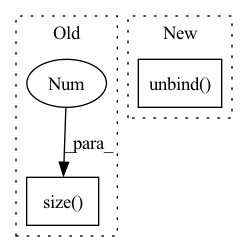

Pattern ID :2057
Before Change
def forward(self, input, hidden_state=None):
output = []
for step in range(input.size(1 ) ):
// Compute current time-step
hidden_state = self.rnn_cell(input[:, step, :, :, :], hidden_state)
output.append(hidden_state)After Change
last_state_list, layer_output
input = self.input_dp(input)
cur_layer_input = torch.unbind( input, dim=int(self.batch_first))
if hidden_state is None:
hidden_state = self.get_init_states(cur_layer_input[0])
In pattern: SUPERPATTERN
Frequency: 3
Non-data size: 2
Instances Fragment ID: 13887043
Project Name: openclimatefix/skillful_nowcasting
Commit Name: 02c5ceadd01484d6ac8bce848ff76446fe7a6917
Time: 2021-10-18
Author: jacob@bieker.tech
File Name: nowcasting_gan/layers/ConvGRU.py
M Class Name: ConvGRU
N Class Name: ConvGRU
M Method Name: forward(3)
N Method Name: forward(3)
M Parent Class: nn.Module
N Parent Class: nn.Module
M File Name: nowcasting_gan/layers/ConvGRU.py
N File Name: nowcasting_gan/layers/ConvGRU.py
M Start Line: 269
M End Line: 276
N Start Line: 196
N End Line: 221
Before Change
layer_output_list = []
last_state_list = []
seq_len = input_tensor.size(1 )
cur_layer_input = input_tensor
for layer_idx in range(self.num_layers):
After Change
-------
last_state_list, layer_output
cur_layer_input = torch.unbind( input, dim=int(self.batch_first))
if not hidden_state:
hidden_state = self.get_init_states(cur_layer_input[0].size(int(not self.batch_first)))
Fragment ID: 13887042
Project Name: openclimatefix/metnet
Commit Name: 12d0ea12a39fb28fca3d382611857f23f060b5b6
Time: 2022-02-01
Author: jacob@bieker.tech
File Name: metnet/layers/ConvLSTM.py
M Class Name: ConvLSTM
N Class Name: ConvLSTM
M Method Name: forward(3)
N Method Name: forward(3)
M Parent Class: nn.Module
N Parent Class: nn.Module
M File Name: metnet/layers/ConvLSTM.py
N File Name: metnet/layers/ConvLSTM.py
M Start Line: 149
M End Line: 188
N Start Line: 160
N End Line: 182
Before Change
self.v_linear = nn.Linear(d_model, d_model, bias=bias)
def forward(self, q, k, v, mask=None):
bs = q.size(0 )
// perform linear operation and split into h heads
if not self.kq_same:
q = self.q_linear(q).view(bs, -1, self.h, self.d_k)After Change
output = self.scaled_dot_product_attention(q, k, v, self.d_k, mask)
// concatenate heads and put through final linear layer
output = torch.cat(torch.unbind( output, dim=-3) , dim=-1)
return output
@staticmethod Fragment ID: 13887041
Project Name: thuwangcy/rechorus
Commit Name: c4edfa4402cd70f204f41ee5b0793f6e8a0b456d
Time: 2020-11-17
Author: THUwangcy@gmail.com
File Name: src/utils/layers.py
M Class Name: MultiHeadAttention
N Class Name: MultiHeadAttention
M Method Name: forward(5)
N Method Name: forward(5)
M Parent Class: nn.Module
N Parent Class: nn.Module
M File Name: src/utils/layers.py
N File Name: src/utils/layers.py
M Start Line: 25
M End Line: 44
N Start Line: 30
N End Line: 40